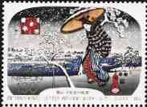

The subtle and sensitive poem published below was written by the Romanian poet George Bacovia (1881-1957). It is the story of a man (the poet himself?), overwhelmed by metaphysical fears and of his lighthearted sweetheart, laughing because of the fears of her lover. Tip: point the stamps with the mouse index to get additional information about the works of art displayed.
|


Irinei
Când îmi
lipsesti
Si-s fãr' de vesti,
Iar vântu' alungã frunze
moarte
Departe, hãt, tot mai departe,
Simt chipul tãu, întunecat
De rândunele ce-au plecat...
Decembre, fioros
sã cerni,
Si-n vãluri, vãluri sã-o asterni
Pe vis profund...
Nor trecãtor,
Plutind pe cer, lucind de dor.
Drumet cãrunt.
Bacovia, salute !
To Irina
When I'm missing you
And I'm without news,
While the wind chases the dead leafs
Far away, more far away,
I feel your face, dimmed
By swallows who left ...
Decembre,
sift fiercely,
And lay it down in veils, veils
On a deep dream...
Passing cloud,
Floating in the sky, twinkling of
longing.
Grey-haired traveler.
This poem was written by the author of this site. Its first version was published on Decembre 27, 1998 on the Arts on Stamps site. The present version was published during the hot summer of the year 2001.
 |
 |
| Created:
Decembre 1998. Revised:
09/01/01. Copyright © 1998 - 2001 by Victor Manta, Switzerland. All rights reserved in all countries. |